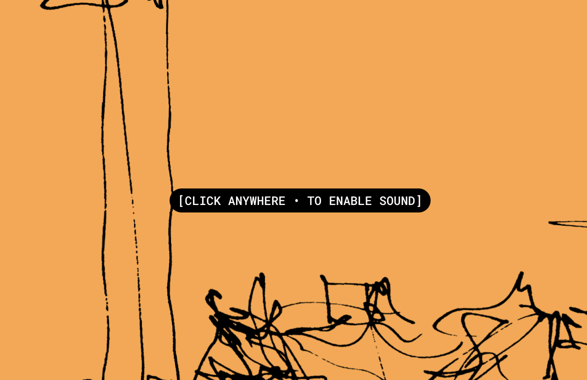
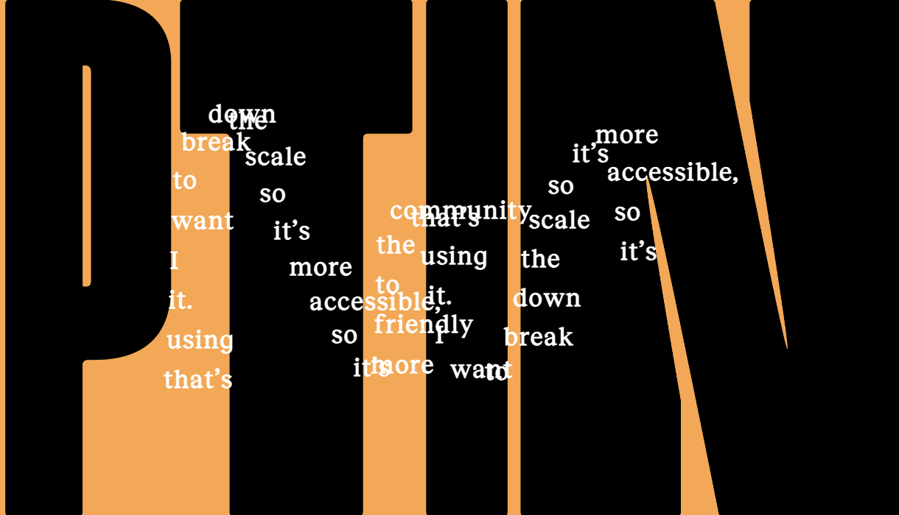
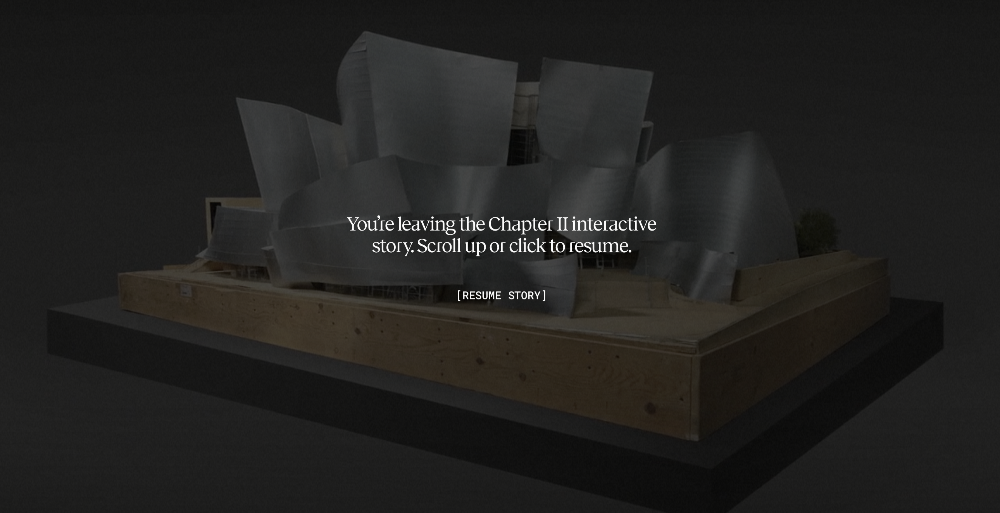
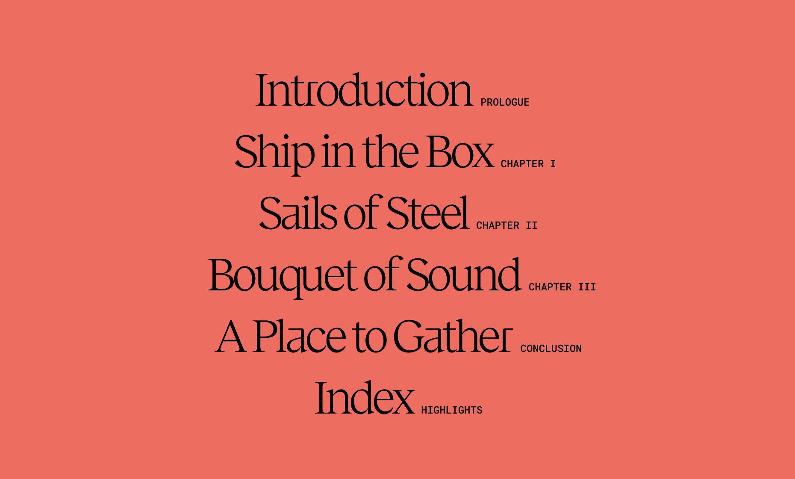
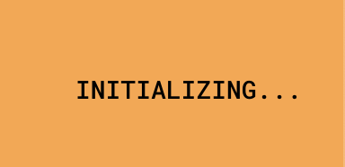
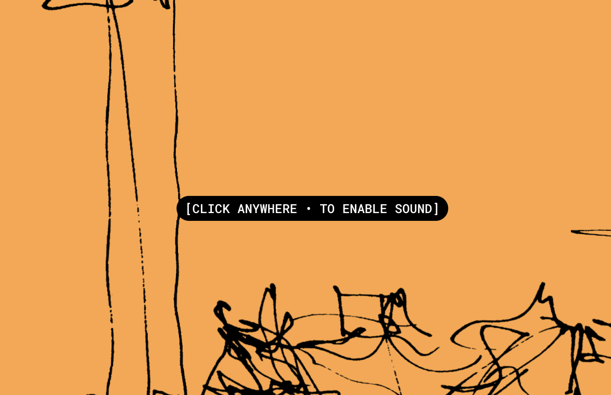
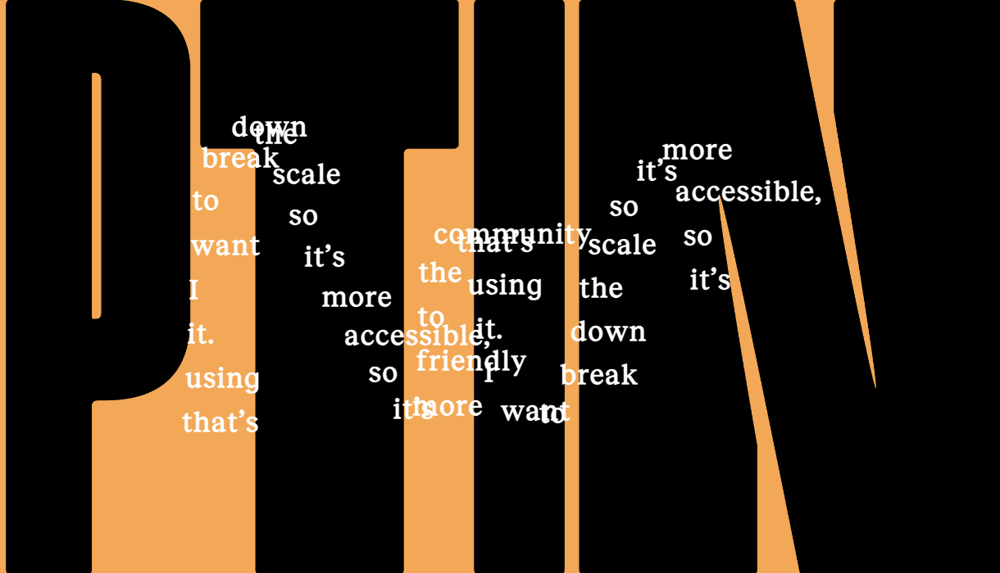
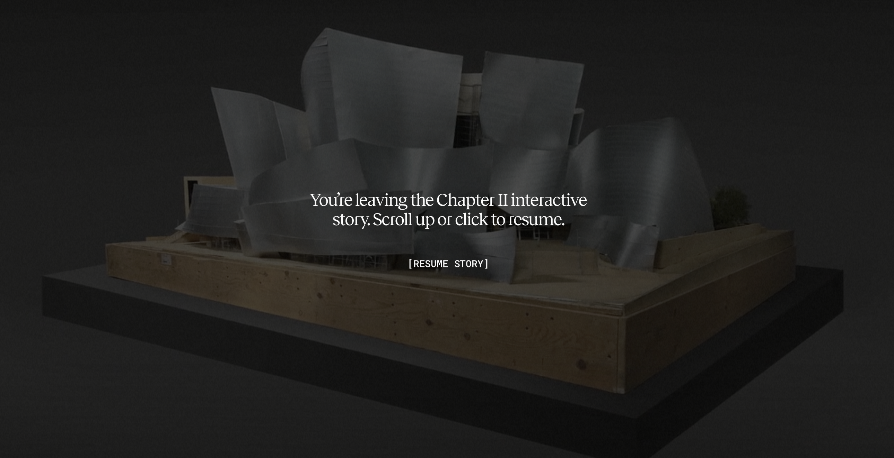
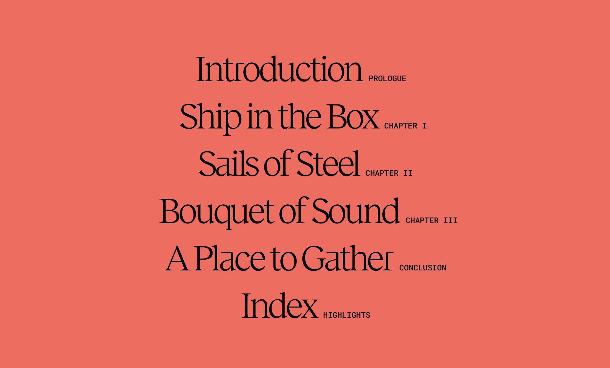
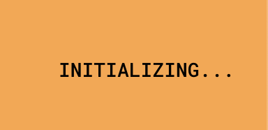

Review of Frank Gehry & the Walt Disney Concert Hall Website
Visit the Website
1. What was the first thing you paid attention to when interacting with
the experience?

The first thing I noticed while opening the site was an orange screen with
black scribbles. Immediately upon moving my mouse, a ‘click anywhere to
enable sound’ text box appeared near my cursor, indicating to me that this
would be an immersive interactive experience.
3. What part of the experience did you spend the most time engaging with?

I spent the most time engaging with the homepage, moving my cursor around as it left a trail of words detailing the author’s intentions. It was oddly satisfying.
5. What is your impression of the intended primary goal of the interactive experience?
The primary goal, in my opinion, seems to be educating visitors about the intricate and iterative design process and significance of the architectural design of the Walt Disney Concert Hall, as well as creating a lasting impression on users of the website (like me!)
7. What is your impression of how the experience should be interacted with over time? (For how long and how many different times?)
I believe that the experience is designed for multiple visits, allowing users to explore different sections in depth, over time. I feel as though it would be a lot of information to consume in one sitting. Each session can vary in length, it would depend on the user’s interest in the different sections.
9. What other forms (digital or otherwise) does the experience reference?

The experience references and heavily relies on audio (as it’s an audiovisual experience) as well as architectural sketches, photos, and video documentaries.
11. What do these references communicate to you about how you should feel when engaging with your research experience?
These references evoke a sense of curiosity and appreciation for the complexity and art involved in architectural design as a whole!
13. What is the most satisfying part of the interaction to you and what makes that part satisfying?
The most satisfying part, as briefly mentioned before, was probably the mouse trail. It wasn’t complicated, but something about a mouse trail stands out to me due to rarely having seen it on other sites I commonly use.
2. Spend two minutes with the experience and create a list of each of your
discrete actions.
- Opened the website and viewed the homepage
- Scrolled down using my mouse to a view of the Walt Disney Concert Hall which sneakily included a
video on the architectural approach (with the playback guided by my
scrolling)
- After spending around two minutes of fascinatedly scrolling,
I opened the menu in the top right corner
- This took me to chapters of each of the sections I was scrolling through
4. What was the most common action in your two-minute interaction with the experience?
The most common action in the two-minute interaction was scrolling with my mouse! Since majority of the website was one page, with the ‘start’ and ‘end’ of the website being on the same page, only needing to scroll to reach the end.
6. How does the interactive experience communicate this primary goal?
A way that the experience communicates this goal is through its scrolling. For example, while scrolling, it begins zooming in to a video of the hall, presumably filmed with a drone but making it seem as though you, the user, has control over how close the camera gets to the building. Text also appears on the screen to explain and introduce the building. This combined, emphasises its importance to the user and encourages them to stop scrolling and consider the content displayed to them.
8. How does the interactive experience communicate how it should be interacted with over time?

The way in which the navigation is structured and segmented encourages users to explore at their own pace, especially with the menu in the top right with chapters. This allows users to revisit at separate times and explore at their own pace.
10. What do these references communicate to you about how you should act when engaging with your research experience?
These references suggest that that the website typically has a large, actively engaged audience. It suggests that I, as the user, should be highly engaged, analysing all visual elements on the page, watching explanatory videos, and using the audio to gain a holistic understanding on the subject.
12. What is the most frustrating part of the interaction to you and what makes that part frustrating?

The most frustrating part of the interaction was probably the long wait time of some of the multimedia elements. It interrupted the flow a little bit, but overall isn’t a major issue, as I know that a website with a lot of interaction may take longer to load.
1. What was the first thing you paid attention to when interacting with the experience?
The first thing I noticed while opening the site was an orange screen with black scribbles. Immediately upon moving my mouse, a ‘click anywhere to enable sound’ text box appeared near my cursor, indicating to me that this would be an immersive interactive experience.
3. What part of the experience did you spend the most time engaging with?
I spent the most time engaging with the homepage, moving my cursor around as it left a trail of words detailing the author’s intentions. It was oddly satisfying.
5. What is your impression of the intended primary goal of the interactive experience?
The primary goal, in my opinion, seems to be educating visitors about the intricate and iterative design process and significance of the architectural design of the Walt Disney Concert Hall, as well as creating a lasting impression on users of the website (like me!)
7. What is your impression of how the experience should be interacted with over time? (For how long and how many different times?)
I believe that the experience is designed for multiple visits, allowing users to explore different sections in depth, over time. I feel as though it would be a lot of information to consume in one sitting. Each session can vary in length, it would depend on the user’s interest in the different sections.
9. What other forms (digital or otherwise) does the experience reference?
The experience references and heavily relies on audio (as it’s an audiovisual experience) as well as architectural sketches, photos, and video documentaries.
11. What do these references communicate to you about how you should feel when engaging with your research experience?
These references evoke a sense of curiosity and appreciation for the complexity and art involved in architectural design as a whole!
13. What is the most satisfying part of the interaction to you and what makes that part satisfying?
The most satisfying part, as briefly mentioned before, was probably the mouse trail. It wasn’t complicated, but something about a mouse trail stands out to me due to rarely having seen it on other sites I commonly use.
2. Spend two minutes with the experience and create a list of each of your discrete actions.
- Opened the website and viewed the homepage
- Scrolled down using my mouse to a view of the Walt Disney Concert Hall which sneakily included a video on the architectural approach (with the playback guided by my scrolling)
- After spending around two minutes of fascinatedly scrolling, I opened the menu in the top right corner
- This took me to chapters of each of the sections I was scrolling through
4. What was the most common action in your two-minute interaction with the experience?
The most common action in the two-minute interaction was scrolling with my mouse! Since majority of the website was one page, with the ‘start’ and ‘end’ of the website being on the same page, only needing to scroll to reach the end.
6. How does the interactive experience communicate this primary goal?
A way that the experience communicates this goal is through its scrolling. For example, while scrolling, it begins zooming in to a video of the hall, presumably filmed with a drone but making it seem as though you, the user, has control over how close the camera gets to the building. Text also appears on the screen to explain and introduce the building. This combined, emphasises its importance to the user and encourages them to stop scrolling and consider the content displayed to them.
8. How does the interactive experience communicate how it should be interacted with over time?
The way in which the navigation is structured and segmented encourages users to explore at their own pace, especially with the menu in the top right with chapters. This allows users to revisit at separate times and explore at their own pace.
10. What do these references communicate to you about how you should act when engaging with your research experience?
These references suggest that that the website typically has a large, actively engaged audience. It suggests that I, as the user, should be highly engaged, analysing all visual elements on the page, watching explanatory videos, and using the audio to gain a holistic understanding on the subject.
12. What is the most frustrating part of the interaction to you and what makes that part frustrating?
The most frustrating part of the interaction was probably the long wait time of some of the multimedia elements. It interrupted the flow a little bit, but overall isn’t a major issue, as I know that a website with a lot of interaction may take longer to load.